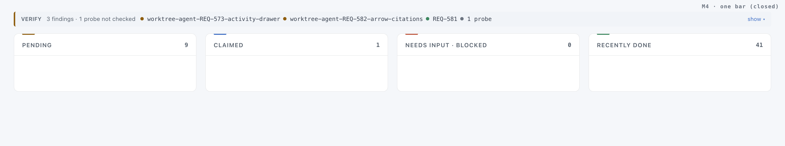
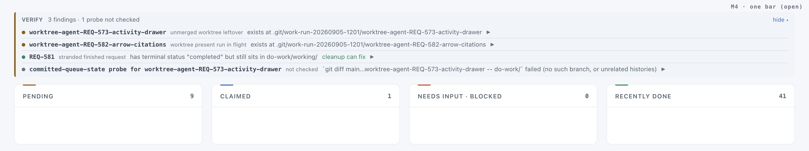
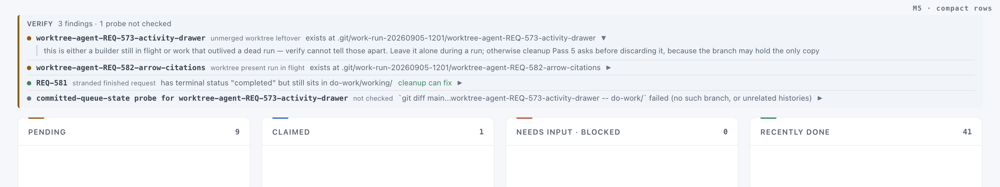
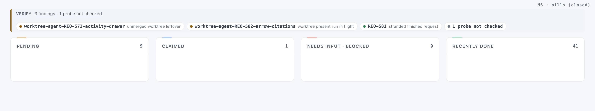
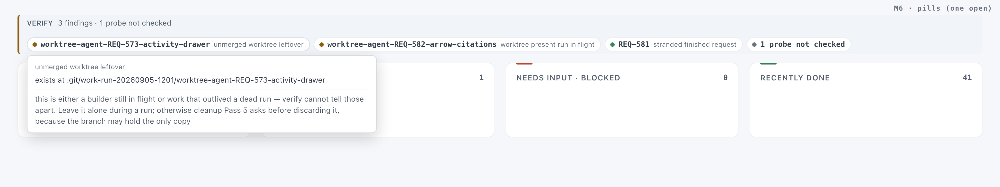

Proposal, second round · Kanban board · Verify findings strip
A slim band for verify findings
2026-09-05 · three mockups, each collapsible, each under 40 px when closed · written before any implementation
Round one shipped M1 (release 0.303.2), and the verdict on it was "not visually nice and huge". This round keeps nothing from M1 except the one-scale type and the grid idea. The mockups are hand-built pages in the board's own stylesheet with the same three findings and one skipped probe as before; nothing here has shipped.
Verdict
The strip was huge because it printed every remedy in full, all the time, inside a bordered card. A remedy is what you read once you have decided to act on a finding, so it belongs behind a click. Everything else on a row is short: a subject, a category, one line of detail.
All three mockups drop the card for a slim band with a 3 px amber edge, replace the shouting uppercase chip with a lowercase category in faint ink, and put a coloured dot on each finding for its weight (amber: read this, green: cleanup can fix, grey: a probe that never ran). They differ only in how much is visible before a click. M4 is the recommendation: closed, the whole strip is one 30 px line that names every subject; open, it is one line per finding with the remedy behind a chevron. M5 is M4 always open. M6 is a row of pills with a card on click, the smallest of the three but the only one that hides the detail too.
What shipped this afternoon, for comparison

Mockups · click show/hide, chevrons and pills
Each frame is a live page; the toggles work. Open one full-size to see it at board width, or add ?theme=dark. Below each frame, the closed and open states as static captures.
One line closed, one line per finding open
Closed: "VERIFY · 3 findings · 1 probe not checked" followed by every subject with its weight dot, and "show" at the right. Open: the subjects become rows (dot, subject, category, detail clipped to the line, chevron); a chevron opens that row's remedy under it. The open/closed state would be remembered per browser.
open full-size · open, expanded · dark capture


Always one line per finding, remedy behind a chevron
M4's open state with no outer toggle: the rows are always there, each 28 px, the detail clipped with an ellipsis at the line's end, the remedy under the row when its chevron is opened. Nothing to remember, one click fewer to reach a detail, four lines taller than M4 closed.
open full-size · light capture · dark capture

A row of pills, a card on click
Each finding is a pill: dot, subject, category. Clicking a pill opens a card with the detail and the remedy, floating over the board. The strip is one line of pills and never grows; the price is that the detail is hidden too, so you cannot scan what is wrong without clicking.
open full-size · one pill open · dark capture


What each one costs
| Option | Height, 3 findings + 1 probe | Clicks to the remedy | Renderer change | Trade |
|---|---|---|---|---|
| M4 | 30 px closed · 120 px open | 2 (show, chevron) | outer details, rows as details, remembered state | smallest when closed and still lists every subject; two clicks to a remedy |
| M5 | 120 px | 1 | rows as details | nothing hidden but the remedy; four lines always on screen |
| M6 | 44 px | 1 | pills as details with a positioned card | never grows; the detail is hidden too, and a card floats over the columns |
All three share the same producer and payload as today (subject, category, detail, remedy, fixable); only the client changes. The lowercase category is the category token with its hyphens shown as spaces, no list in the client.
Next step
Pick one and it is captured as an addendum to REQ-588 (the M1 rows) and built the same way. Bundle: ai-reports/2026-09-05_1740_REQ-588-verify-findings-compact-mockups/.
Mockups and captures made 2026-09-05 17:40 to 17:50 UTC with headless Chrome at 1600 px, light and dark. Report layout render-verified in both themes.